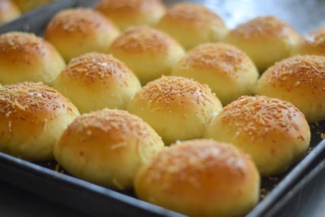
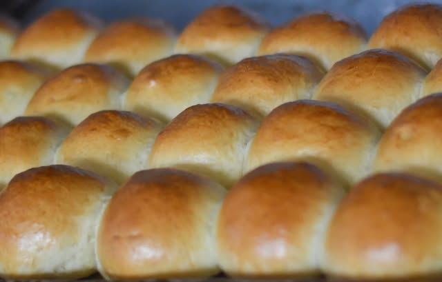
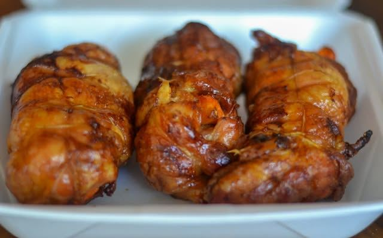
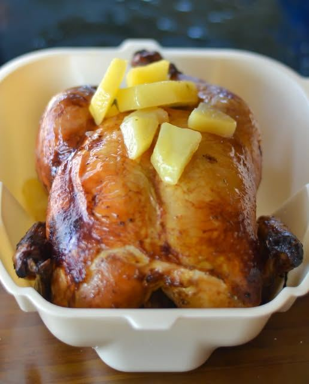
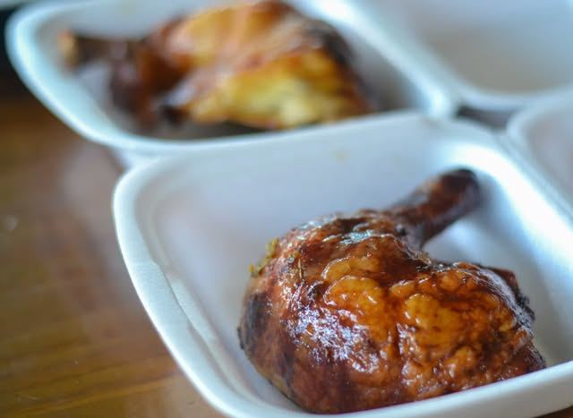
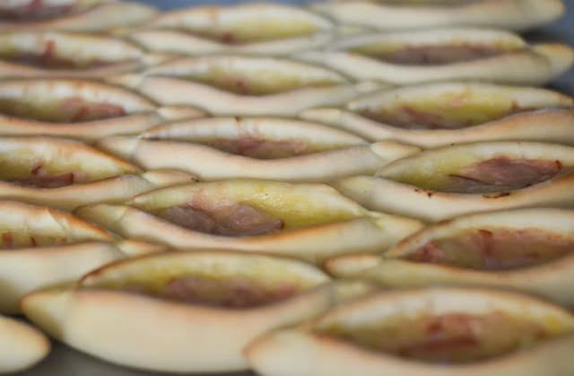
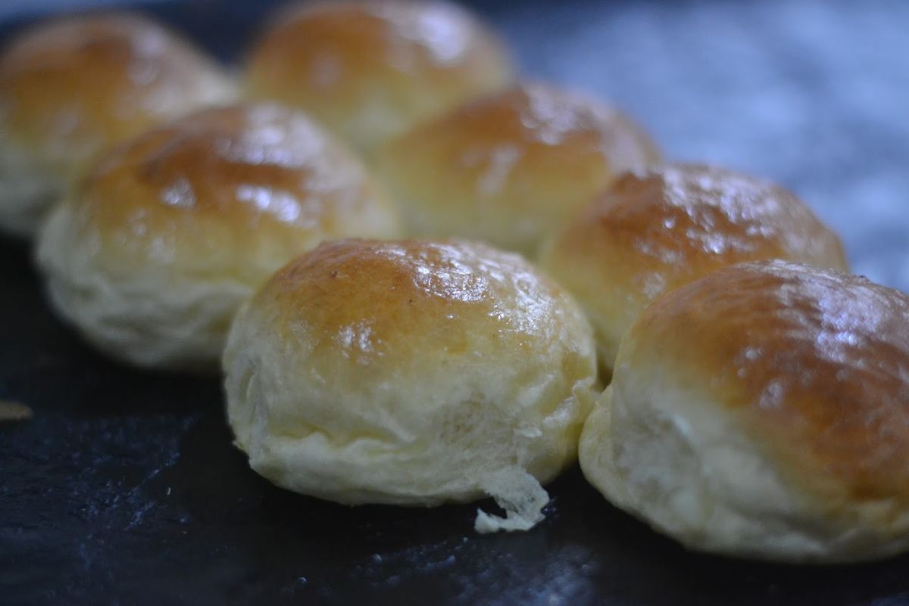
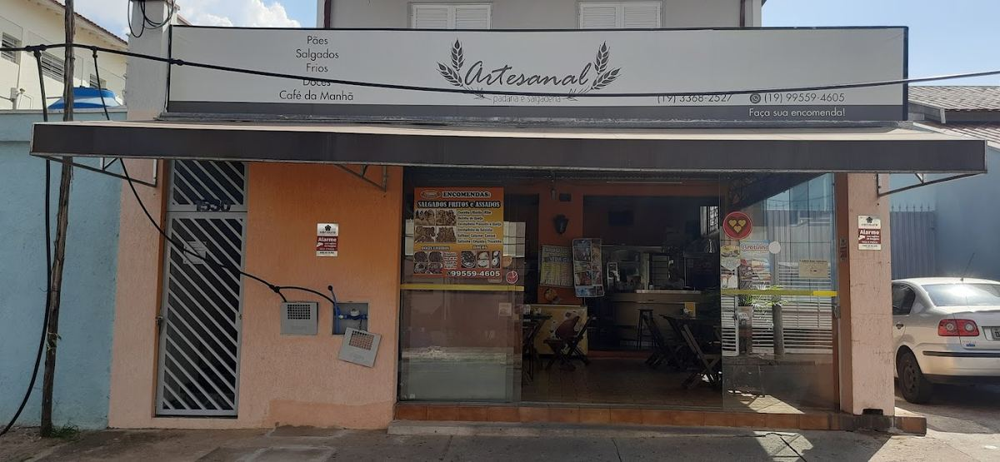

Pão de leite
Macio e dourado, para o café da manhã.
Padaria de bairro no Jardim Novo Campos Elíseos: pão que chega quentinho até pelo iFood, salgados que fazem sucesso em festa, bolos com preço bom e frango assado para o almoço de domingo.




Domingo pede frango assado, e o da Artesanal é dos mais elogiados do bairro. Garanta o seu com antecedência e só passe para buscar.
Coxinha e os salgados que os clientes chamam de “top demais”. Use a calculadora para ter uma ideia da quantidade e mande o pedido.


Macio e dourado, para o café da manhã.

Fornadas ao longo do dia, desde cedinho.
Coberto de queijo ralado, para quem gosta de um agrado.
Já pedi diversas vezes pelo iFood. O pão quase sempre vem quentinho, a sacola vem até “suada”. Uma delícia, e o preço é ótimo.Milena · Google
Padaria de bairro, ambiente acolhedor, organizado e limpo. Os salgados estavam ótimos e o suco de laranja uma delícia.Victor · Google
Bolos bons e baratos, salgados para festa top demais. Super recomendo.Avaliação no Google
